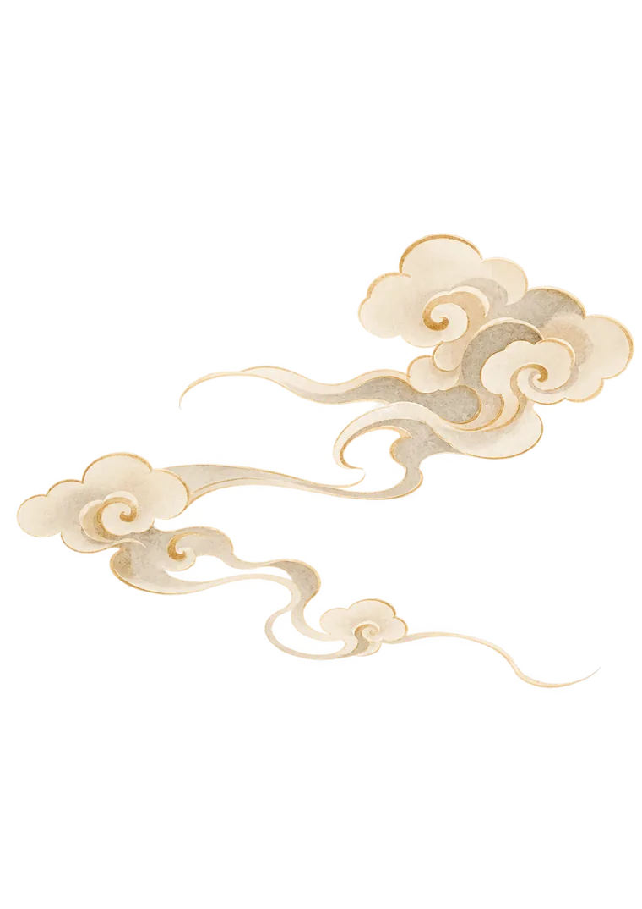

学生在学的课程What her students study with
Each course follows a real textbook, lesson by lesson, with everything for a lesson on one page. When a student needs a new book, it gets added.
从你的水平开始Start where you are
- 零基础Complete beginnerThe pinyin chart, then HSK 1 or Conversational Chinese 360, Book 1
- 有基础I know some ChineseJump into HSK 3–4 or New HSK 3.0 at your level
- 想开口说I want to speakSpoken Chinese for a New Era, Conversational Chinese 360, or Survival Chinese for travel and daily life
- 备考 HSKI’m taking the HSK examHSK Standard Course 1–6, plus the grammar index
- 爱读书I like readingReading China (中文天天读) — 6 graded readers in 3 levels
Mix and match — any book, any lesson, any section. Your teacher helps you choose.
Don’t see your goal?
Flashcards with audio生词闪卡
Chinese on the front, pinyin and meaning on the back. Tap a card to flip it and hear the word.
Inside every lesson每一课
- 课文Lesson text
- 生词闪卡Flashcards
- 词汇详解Vocabulary
- 语法Grammar
- 练习Exercises
- 话题讨论Talking points
Textbook names belong to their publishers. Covers shown are our own artwork; lesson content is for enrolled students.
Four tools you can use right now — free, no sign-up

语法汇总Grammar index
Every point from HSK 1–6, New HSK 3.0, Conversational Chinese 360 and Discover China in one place. Search in Chinese, in pinyin with or without tones, or in plain English.
中国风Chinese songs
From Jay Chou’s “Blue and White Porcelain” to theme songs from classic kung fu and fantasy dramas. Watch the MV, then tap three key words from the lyrics to hear them.
天青色等烟雨，而我在等你
拼音表Pinyin chart
Every syllable is a real native-speaker recording, not a robot voice. Each initial and final has an English sound-alike — x is like “sh” with a smile, q like “ch” with lips spread. Tap a tone stroke to see one sound carry four meanings.
Open the pinyin chart →床前明月光，
疑是地上霜。
举头望明月，
低头思故乡。
静夜思 · 李白
古诗词Classical poems
Li Bai, Du Fu, Su Shi, Li Qingzhao — on one handscroll, oldest to newest. Every line has pinyin and an English translation; tap a word for its meaning, and learn what the moon, the willow or the wild goose means in a Chinese poem.